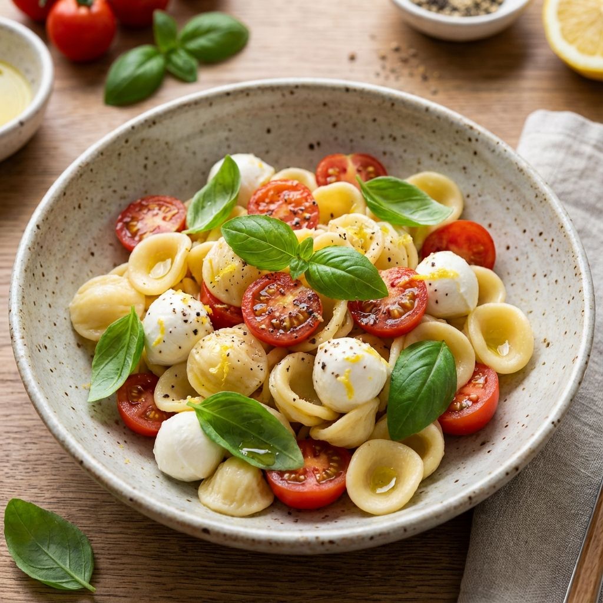

Ensalada de Pasta Caprese Fresca
Una combinación clásica de tomates cherry, mozzarella fresca y albahaca con un aderezo balsámico ligero.
Explora miles de recetas creadas por chefs y amantes de la cocina. Desde cenas rápidas hasta banquetes gourmet.
Una combinación clásica de tomates cherry, mozzarella fresca y albahaca con un aderezo balsámico ligero.
El desayuno perfecto para el fin de semana. Pancakes suaves y aireados cubiertos con miel de maple real.
Recibe nuestro plan de comidas semanal directamente en tu correo.